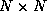

Directory Contents
The N-Queens benchmark solves the combinatorially hard chess problem of
placing N queens on an  chessboard such that no queen
can attack any other. The typical software solution to this problem
uses a recursive search for a placement of the queens that meets the
correct conditions. In the RAW benchmark the program is represented
by N computation elements, each of which is responsible for the
position of one of the queens. A token is passed back and forth
between these computational elements representing control flow, much
as a stack pointer would in the recursive software solution to the
algorithm. Each computational element monitors the positions of the
queens in other columns to determine a legal position for its own
queen. During a particular cycle, only the computational element
currently holding the token changes the position of its queen.